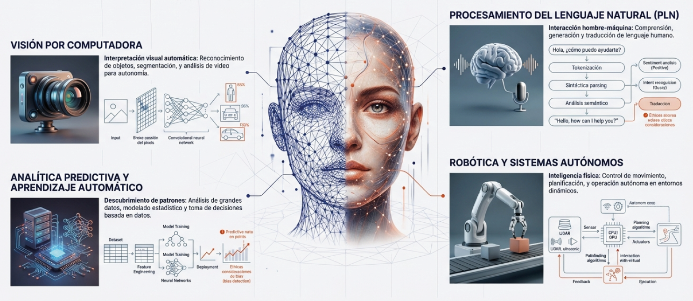
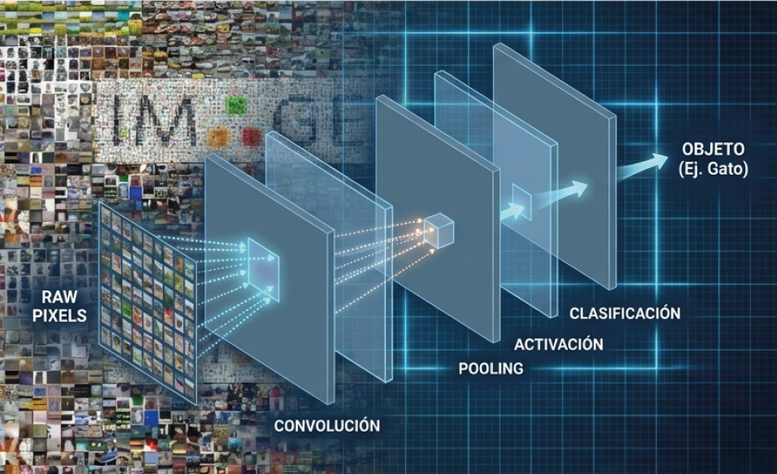
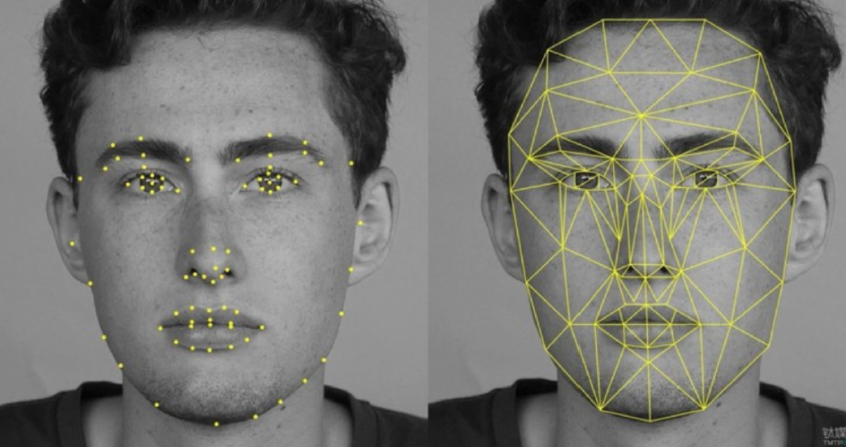
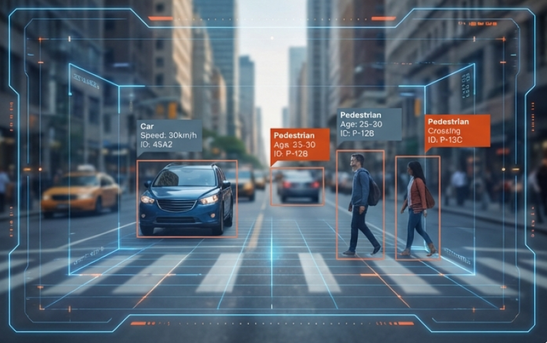
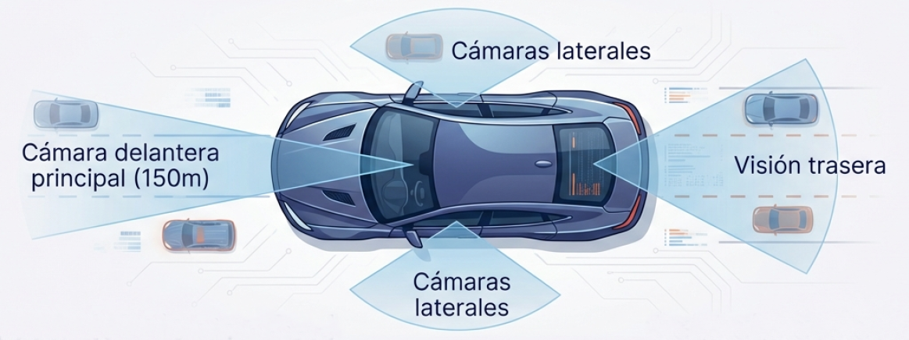
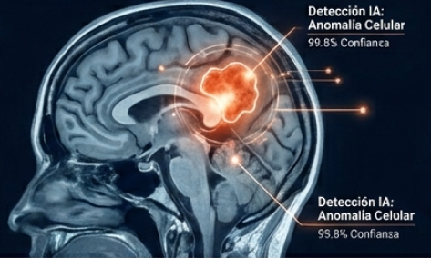
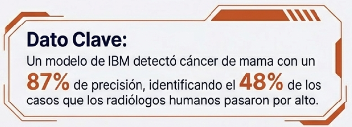
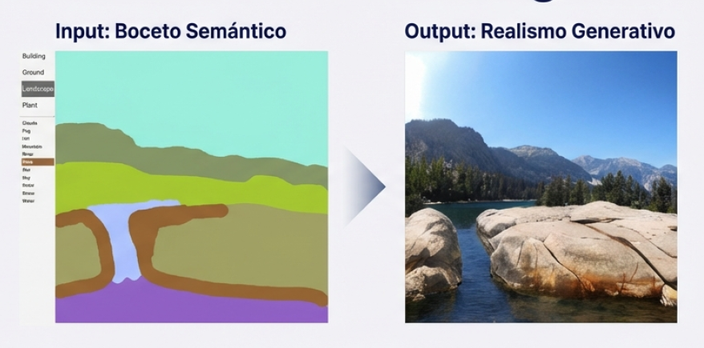

A lo largo de esta unidad, vas a conocer mejor los campos donde se aplica la inteligencia artificial en la
actualidad. Al igual que sucedió con la digitalización y está ocurriendo con la Transformación Digital, en
las próximas décadas la inteligencia artificial se convertirá en la tecnología fundamental de cualquier
sistema informático. Podemos identificar cuatro grandes áreas principales, aunque muchas aplicaciones
sociales o industriales combinan soluciones de dos o más de estas áreas:

Visión artificial: Aplicación de la inteligencia artificial para reconocer y procesar
imágenes, vídeos y audio.
Lenguaje natural: Aplicación de la inteligencia artificial para procesar el lenguaje
humano, crear asistentes conversacionales y gestionar la comunicación oral y escrita.
Analítica avanzada: Aplicación de la inteligencia artificial para crear modelos
predictivos en áreas como inteligencia de negocio, biotecnología y biomedicina.
Sistemas robóticos: Aplicación de la inteligencia artificial a robots y vehículos de
conducción autónoma.
En esta unidad exploraremos las técnicas y necesidades que caracterizan cada tipo de aplicación, los riesgos
que conllevan y cómo se está configurando el futuro en torno a ellas.
1. Reconocimiento y generación de imagen
Hoy en día es posible realizar cosas asombrosas con esta rama de la Inteligencia Artificial. Sin embargo, el
aspecto legal y la protección del derecho a la privacidad de las personas es fundamental (tanto por ley como
por ética). Debemos ser muy cuidadosos para encontrar el equilibrio adecuado entre lo que técnicamente
"podemos" hacer y lo que éticamente "debemos" hacer.
Los avances en reconocimiento de imagen y visión artificial no surgieron de un solo lugar, sino que se fueron
desarrollando gracias a las aportaciones de muchos investigadores e ingenieros que compartieron sus ideas.
Un ejemplo destacado es Yann Lecun, quien a finales de los años 90 creó LeNet, utilizando redes neuronales
convolucionales para reconocer dígitos escritos a mano.
Un hito importante fue el lanzamiento de ImageNet por parte de Fei Fei Li, una base de datos abierta y
gratuita que actualmente contiene más de 14 millones de imágenes. Esto impulsó enormemente el desarrollo de
nuevas aplicaciones de visión artificial. La disponibilidad de mejores conjuntos de datos con imágenes
etiquetadas, combinada con un mayor conocimiento de las redes convolucionales, ha revolucionado el campo de
la visión computacional. Ya no se trata solo de tener más resolución o mejores gráficos 3D, sino de una
cuestión más cognitiva: ahora podemos crear modelos que realmente comprenden qué están viendo.

La visión artificial automatiza la extracción, el análisis, la clasificación y la comprensión de información
útil a partir de datos visuales. Estos datos pueden presentarse en diferentes formas:
Imágenes individuales
Secuencias de vídeo
Imágenes capturadas desde múltiples cámaras
Datos tridimensionales
1.1. Reconocimiento Facial
Un analizador facial es un software que identifica o confirma la identidad de una persona a
partir del rostro. Funciona mediante la identificación y medición de los rasgos faciales en una imagen. El
reconocimiento facial puede identificar rostros humanos en imágenes o videos, determinar si el rostro que
aparece en dos imágenes pertenece a la misma persona o buscar un rostro entre una gran colección de imágenes
existentes.

Los sistemas de seguridad biométricos utilizan el reconocimiento facial para identificar de forma exclusiva
a las personas durante la incorporación o el inicio de sesión de los usuarios, así como para reforzar la
actividad de autenticación de estos. Los dispositivos móviles y personales también utilizan con frecuencia
la tecnología de los analizadores faciales para proteger los dispositivos.
1. Detección y Análisis de Datos Faciales
Se pueden detectar los datos faciales tanto en los perfiles frontales como en los laterales del rostro. El
sistema de reconocimiento facial analiza la imagen del rostro, asigna y lee la geometría del rostro y las
expresiones faciales. Identifica los puntos de referencia faciales que son clave para
distinguir un rostro de otros objetos.
1.1 Puntos de Referencia Principales
La tecnología de reconocimiento facial por lo general busca los siguientes elementos característicos:
Distancia entre los ojos
Distancia de la frente a la barbilla
Distancia entre la nariz y la boca
Profundidad de las cuencas oculares
Forma de los pómulos
Contorno de los labios, las orejas y la barbilla
2. Huella Facial: Identificación Única
El sistema convierte los datos de reconocimiento facial en una cadena de números o puntos denominada
huella facial. Cada persona tiene una huella facial única, de forma similar a una huella
dactilar. La información utilizada por el reconocimiento facial también se puede utilizar a la inversa para
reconstruir digitalmente el rostro de una persona.
Nota: La huella facial es una representación matemática única de los rasgos faciales de
cada individuo, lo que permite su identificación precisa en sistemas biométricos.
3. Proceso de Comparación y Verificación
El reconocimiento facial puede identificar a una persona al comparar los rostros de dos o más imágenes y
evaluar la probabilidad de que coincidan. Por ejemplo, puede verificar que el rostro mostrado en una
autofoto tomada con la cámara de un móvil coincide con el rostro de una imagen de un documento de identidad
emitido por el gobierno, como un permiso de conducir o un pasaporte.
Asimismo, el sistema puede verificar que el rostro que aparece en la autofoto no coincide con un
rostro de un conjunto de rostros capturados previamente, lo que resulta útil para prevenir suplantaciones de
identidad.
1.2. Vigilancia
El uso de cámaras para sistemas de vigilancia y seguridad se ha extendido ampliamente en nuestra sociedad
actual. En algunos casos, estas cámaras forman parte de sistemas de inteligencia artificial. Esta aplicación
del reconocimiento de imagen genera bastante controversia, ya que plantea importantes dudas éticas sobre las
libertades fundamentales de las personas. Es una herramienta muy útil y potente, que puede beneficiar al ser
humano tanto como perjudicarlo.

En la mayoría de los casos, el software realiza cálculos agregados de lo que "ve" y devuelve valores de
ciertos indicadores, en lugar de mostrar la imagen completa o fragmentos de grabación con datos personales.
Entre las aplicaciones concretas de este tipo de sistemas encontramos:
Vigilancia y control del tráfico urbano
Cuidado y monitorización de personas mayores
Detección de infracciones de normas sanitarias en la industria (especialmente en la industria
alimentaria)
Supervisión del uso de infraestructuras críticas
Monitorización del funcionamiento y estados en líneas de producción
Cualquier proceso o sistema donde se puedan detectar anomalías a través de la imagen sería un buen candidato
para aplicar este tipo de solución. Incluso la inteligencia artificial puede ayudar a hacer más respetuosas
con la privacidad ciertas aplicaciones y herramientas que ya se estaban utilizando.
1.3. Conducción autónoma
El sistema de conducción autónoma de vehículos involucra varias tareas y subsistemas, pero uno de los más
importantes es el de visión artificial, ya que la mayoría de las decisiones de seguridad del vehículo se
basan en lo que captan las cámaras.

La cuestión crítica en estos sistemas es el reconocimiento de señales de tráfico y objetos u obstáculos
alrededor del vehículo cuando este se desplaza a velocidades relativamente altas. El sistema de visión debe
captar la imagen con suficiente antelación como para poder frenar a una distancia segura. Del mismo modo,
captar cómo son las líneas de la carretera para ajustar la dirección requiere detectar esas variaciones de
trayectoria con la rapidez necesaria.
1.4. Sistema auxiliar en robots
Los robots son sistemas complejos que ejecutan una serie de tareas en el mundo físico basándose en una
secuencia programada. Un sistema robótico tiene tres componentes fundamentales:
Sensores o entradas: Captan información del entorno
Sistema de control: Procesa la información y toma decisiones
Actuadores: Ejecutan las acciones físicas
El sistema de visión artificial de un robot le permite detectar objetos y posicionarse a sí mismo o
posicionar los objetos que transporta en función de lo que está viendo. Esto representa un gran avance
respecto a otros sistemas de posicionamiento que requerían constantes tareas de calibración y ralentizaban
las operaciones del robot. En la industria agroalimentaria, la capacidad de visión inteligente es de vital
importancia, porque constituye una parte decisiva para obtener un buen producto o una buena cosecha. En
algunos casos, el robot puede distinguir mejor que el ser humano si una fruta está en su momento óptimo de
recolección.
1.5. Detección y diagnóstico médico
En el campo de la medicina, la inteligencia artificial está teniendo un impacto de enorme valor porque no
solo mejora la calidad de vida de las personas, sino que literalmente puede salvar vidas. Este es el caso de
las herramientas de inteligencia artificial para la detección y diagnóstico de enfermedades a través de
imágenes.

Existen numerosos programas informáticos de apoyo al diagnóstico que han ido mejorando su aprendizaje
mediante su uso repetido y continuado. Actualmente hay diferentes tipos de software que se aplican a
distintos grupos de enfermedades, como MYCIN/MYCIN II para enfermedades infecciosas, CASNET para
oftalmología, PIP para enfermedades renales o AI/RHEUM para enfermedades reumatológicas.

En el campo del procesamiento e interpretación de imágenes para el diagnóstico, la inteligencia artificial
ofrece algoritmos que mejoran la calidad y la precisión del diagnóstico. Los métodos de IA destacan por
reconocer automáticamente patrones complejos en los datos de imágenes, eliminar el ruido en las imágenes
ofreciendo mayor calidad, y permitir establecer modelos tridimensionales a partir de imágenes de pacientes
específicos.
1.6. Procesos creativos
Uno de los grandes e inesperados avances de la computación de la década pasada ha sido el de los modelos
generativos: las redes GAN (Redes Generativas Antagónicas) para el campo de la imagen y los modelos de
generación de texto basados en Transformers.
Deep Dream: En 2015 apareció DeepDream, un modelo de generación de imágenes creado por
Google. El algoritmo procesa la imagen identificando sus elementos para aplicar una transferencia de
estilos, respetando la identidad esencial de la imagen original.
GauGAN: Es una herramienta de Nvidia que permite crear paisajes realistas partiendo de
un boceto simple. Utiliza una red de confrontación generativa (GAN) basada en una técnica llamada
"normalización espacialmente adaptativa" que es capaz de generar imágenes realistas a partir de un
diseño controlado por el usuario.

DALL·E: Es el modelo de generación de imágenes de OpenAI (actualmente en su versión
DALL·E 3 en 2025) y se trata de una implementación multimodal que combina comprensión de texto e imagen.
El algoritmo interpreta una descripción escrita y genera la imagen correspondiente. Utiliza un proceso
llamado "difusión" que parte de una imagen de ruido aleatorio y va alterando ese patrón de puntos a
medida que va reconociendo distintos elementos cuyas palabras clave se le han proporcionado en la
descripción.